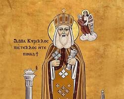

| الترتيب البابوي: | البطريرك الرابع والعشرون (24) |
| اللقب الكنسي: | عمود الدين / مصباح الكنيسة الأرثوذكسية |
| فترة الرعاية: | 412 م - 444 م |
| صلة القرابة الكنسية: | ابن أخت البابا ثاوفيلس (البطريرك 23) وتلميذه |
نبذة تاريخية مفصلة
قضى البابا كيرلس الأول خمس سنوات في دير القديس مقار بالبرية، حيث عكف على دراسة الكتب المقدسة والعلوم اللاهوتية بدقة تامة. لُقّب بـ "عمود الدين" نظراً لكتاباته وصياغاته العقائدية المحكمة التي وضعت الحدود الفاصلة للإيمان الأرثوذكسي المستقيم.
أهم الإنجازات والعمل المسكوني
- مجمع أفسس المسكوني (431م): ترأس البابا كيرلس هذا المجمع العالمي الذي انعقد لمواجهة بدعة نسطور (بطريرك القسطنطينية) الذي نادى بفصل طبيعتي السيد المسيح ورفض تسمية السيدة العذراء بـ "والدة الإله".
- إقرار لقب "ثيؤطوكوس": نجح في إثبات وإقرار لقب "والدة الإله" (ثيؤطوكوس) للسيدة العذراء مريم كركيزة لعقيدة التجسد الإلهي.
- مقدمة قانون الإيمان: صاغ مقدمة قانون الإيمان الشهيرة التي تبدأ بـ "نعظمك يا أم النور الحقيقي..." والتي تتلوها الكنيسة في كافة صلواتها حتى اليوم.
- تنقيح صلوات الليتورجيا: قام بمراجعة وتنقيح القداس المنسوب لمارمرقس الرسول وأضاف عليه بعض الصلوات ليُعرف بالقداس الكيرلسي.
أشهر أقواله اللاهوتية
"طبيعة واحدة متجسدة للإله الكلمة" (Mia Physis) - وهي الصياغة اللاهوتية الأساسية التي ترتكز عليها عقيدة الكنائس الأرثوذكسية الشرقية.